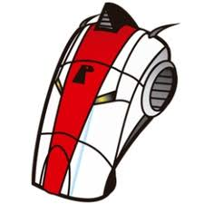

⠀
Los usos de este gestor de descarga son los siguientes:⠀
-Pausar y reanudar las descargas de archivos -Descargar archivos en conexiones lentas -Descargar varios archivos de un sitio de internet -Descargar programas (incluyendo desconexión y apagado automático) -Evitar que una descarga se cancele o se corrompa si hay una conexión lenta.⠀
Estos son algunos de los tipos de gestores existentes:⠀
Gestor de descargas continuas: Estos son considerados los mas comunes permite recuperar archivos con errores producidos en la descarga, resúmenes de descargas con fallos y listado de ultimas descargas. También nos permite continuar la descarga de archivos aunque se halla producidos errores en la descarga⠀
Gestor de descargas por categorías: Este tipo de gestor funciona junto con el navegador y su principal labor es aligerar la descarga › Contiene funciones tales como: definición de categorías, conexión y desconexión automática, agenda de descargas, antivirus, etc. › Se puede configurar para que ella sola se conecte al proveedor de internet, realice las descargas, culmine la conexión y apague la computadora.⠀
Gestor de descargas fragmentadas: Este gestor fragmenta los archivos en partes cuando el tamaño es fijado por el usuario en la configuración, después descargados los integra para conformar el archivo Se usan cuando los archivos son demasiados grandes.⠀
Estos son los gestores mas conocidos:⠀
Atube Cátcher: Permite descargar un video de manera rápida y segura de YouTube, Facebook, etc. Puede convertir un video al formato que desee.⠀
⠀
Mipony: Permite varias descargas a la vez Permite continuar descargas pausadas Interfaz amigable⠀
